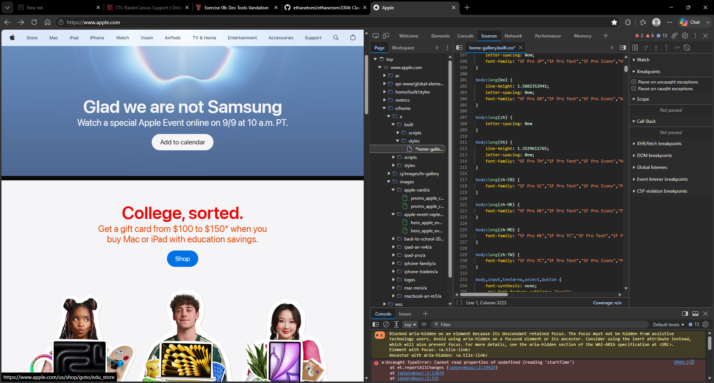

My Dev Tools Vandalism: Changing apple.com to be sarcastic
I used browser developer tools to temporarily "vandalize" a website. Below is a screenshot showing my changes. These edits only appeared on my computer and did not affect the actual website. I changed the landing page of apple.com to say sarcastically " Glad we are not Samsung" and changed the color scheme layout from the apple 'blue' to red and orange texts.

What I "Vandalized"
Describe the changes you made to the website using the browser's developer tools. Some potential questions to consider:
- I edited the main heading on the landing page.
- What CSS properties did you modify? I modified the color.
- What made your edits interesting or amusing? It was sarcastic joke aimed at Samsung.
- Did you understand why some changes worked and some didn't? Yes noticed the hierarchial layering of some the CSS elements.
- Why did you choose the changes you did? I wanted to create a humorous contrast to the typical apple.com branding.
- Were you able to understand how the HTML and CSS worked together to make the changes you made? Yes, I gained a better understanding of how the two technologies interact.
- Do you think you have a better sense of how dev tools can be used while crafting your own webpages? Yes, I feel more confident in using them for debugging and styling.